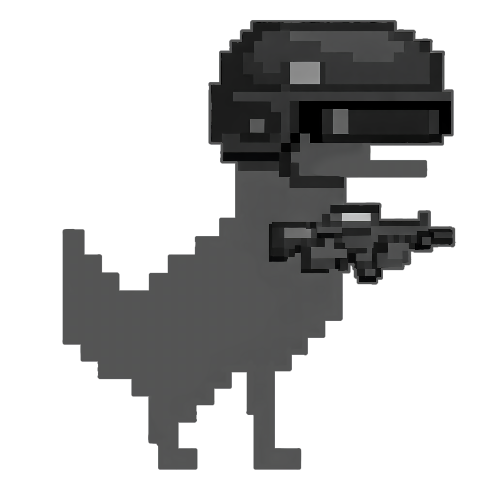

<canvas id="c"></canvas>

<script>
    var canvas = document.getElementById('c'), w = 800, h = 450;
    canvas.width = w; canvas.height = h;
    var ctx = canvas.getContext('2d');

    // Simple runner game (Chrome dino style)
    var groundY = h - 30;

    var img = document.getElementById('jaklicImg');

    var player = {
        x: 60,
        y: groundY,
        w: 44,
        h: 44,
        vy: 0,
        gravity: 0.7,
        jumpPower: -19,
        grounded: true,
        draw: function() {
            if (img && img.complete) {
                ctx.drawImage(img, this.x - this.w/2, this.y - this.h, this.w, this.h);
            } else {
                ctx.fillStyle = '#333';
                ctx.fillRect(this.x - this.w/2, this.y - this.h, this.w, this.h);
            }
        },
        update: function() {
            this.vy += this.gravity;
            this.y += this.vy;
            if (this.y >= groundY) {
                this.y = groundY; this.vy = 0; this.grounded = true;
            } else {
                this.grounded = false;
            }
        },
        jump: function() {
            if (this.grounded) {
                this.vy = this.jumpPower; this.grounded = false;
            }
        },
        rect: function() { return {x: this.x - this.w/2, y: this.y - this.h, w: this.w, h: this.h}; }
    };

    var obstacles = [];
    var spawnCooldown = 0; // seconds until next spawn
    var spawnMin = 0.6, spawnMax = 1.2; // spawn interval range (s) — more frequent
    var baseSpeed = 750; // pixels per second (original feel)
    var speed = baseSpeed;
    var speedRamp = 4; // how quickly speed increases per score point
    var score = 0;
    var scoreAcc = 0; // fractional score accumulator
    var highScore = 0;
    var gameOver = false;
    // ASCII-art image overlay (fades in when score reaches threshold)
    var asciiTriggered = false;
    var asciiAlpha = 0;
    var asciiConsumed = false; // becomes true once ascii image has finished fading out
    var asciiFadeDuration = 2.0; // seconds to fully fade in
    var asciiTriggerScore = 100;
    var asciiImg = new Image();
    var asciiImgLoaded = false;
    asciiImg.src = 'ascii-art-modified.png';
    asciiImg.onload = function(){ asciiImgLoaded = true; };
    // vertical offset (pixels) to move the ascii image up when drawn
    var asciiYOffset = 20;
    // day/night cycle
    var dayTime = 0;
    var dayCycle = 40.0; // seconds per full day->night->day cycle
    var nightStrength = 0; // 0..1
    // jaysmom background image (fades in/out between scores)
    var jaysImg = new Image();
    var jaysImgLoaded = false;
    var jaysAlpha = 0;
    var jaysFadeInStart = 300;
    var jaysFadeInDuration = 3.0;
    var jaysFadeOutStart = 400;
    var jaysFadeOutDuration = 3.0;
    jaysImg.src = 'jaysmom.png';
    jaysImg.onload = function(){ jaysImgLoaded = true; };
    // rock image (generated in-memory) to replace ASCII rocks
    var rockBaseW = 56, rockBaseH = 36;
    var rockYOffset = 6; // pixels to nudge rock down so it sits flush on the ground
    var rockImg = new Image();
    (function(){
        var oc = document.createElement('canvas');
        oc.width = rockBaseW; oc.height = rockBaseH;
        var octx = oc.getContext('2d');
        // base shape (rounded top, flat bottom) so rock sits flush on ground
        var left = rockBaseW * 0.12;
        var right = rockBaseW - left;
        var topY = rockBaseH * 0.20;
        var bottomY = rockBaseH * 0.86;
        octx.fillStyle = '#999';
        octx.beginPath();
        octx.moveTo(left, bottomY);
        octx.quadraticCurveTo(rockBaseW*0.25, rockBaseH*0.06, rockBaseW/2, topY);
        octx.quadraticCurveTo(rockBaseW*0.75, rockBaseH*0.06, right, bottomY);
        octx.closePath();
        octx.fill();
        // darker shading toward bottom (fill the same shape with gradient)
        var g = octx.createLinearGradient(0, topY, 0, bottomY);
        g.addColorStop(0, 'rgba(255,255,255,0.02)');
        g.addColorStop(1, 'rgba(0,0,0,0.14)');
        octx.fillStyle = g;
        octx.beginPath();
        octx.moveTo(left, bottomY);
        octx.quadraticCurveTo(rockBaseW*0.25, rockBaseH*0.06, rockBaseW/2, topY);
        octx.quadraticCurveTo(rockBaseW*0.75, rockBaseH*0.06, right, bottomY);
        octx.closePath();
        octx.fill();
        // subtle highlight near the upper surface
        octx.fillStyle = 'rgba(255,255,255,0.06)';
        octx.beginPath();
        octx.ellipse(rockBaseW*0.42, rockBaseH*0.34, rockBaseW*0.18, rockBaseH*0.12, -0.3, 0, Math.PI*2);
        octx.fill();
        rockImg.src = oc.toDataURL();
    })();
    // ASCII art pieces for rocks, trees, clouds, terrain
    var rockArt = [
        "  ___ ",
        " / _ \\",
        "| (_) |",
        " \\___/ ",
    ];
    var treeArt = [
        "  /\\  ",
        " /**\\ ",
        "/***\\",
        "  ||   "
    ];
    var cloudArt = [
        "  __  ",
        " (  ) ",
        "(___) "
    ];
    var terrainVariants = []; // placeholder (we'll spawn procedural terrain types)
    // background layers
    var clouds = [];
    var trees = [];
    function spawnCloud(x) {
        x = (typeof x === 'number') ? x : w + Math.random()*200;
        clouds.push({x:x, y: 40 + Math.random()*80, parallax: 0.25 + Math.random()*0.25});
    }
    function spawnTree(x) {
        x = (typeof x === 'number') ? x : w + Math.random()*300;
        trees.push({x:x, y: groundY, parallax: 0.6 + Math.random()*0.3});
    }

        // terrain background (ASCII mountains, waterfalls, forests)
        var terrains = [];
        function spawnTerrain(x) {
            x = (typeof x === 'number') ? x : w + Math.random()*400;
            var types = ['mountain','waterfall','forest'];
            var t = types[Math.floor(Math.random()*types.length)];
            var tw = 120 + Math.random()*240;
            var th = 60 + Math.random()*120;
            // choose ASCII art for each terrain type
            var art = [];
            if (t === 'mountain') {
                art = [
                    "    /\\    ",
                    "   /  \\   ",
                    "  /____\\  ",
                    " /_/\_\\_\ "
                ];
            } else if (t === 'waterfall') {
                art = [
                    "  ~~~~~~  ",
                    "  ||  ||  ",
                    "  ||  ||  ",
                    "  ||  ||  "
                ];
            } else if (t === 'forest') {
                art = [
                    "  /\\   /\\  ",
                    " /**\\ /**\\ ",
                    "/***\\/***\\",
                    "  ||    ||   "
                ];
            }
            terrains.push({type: t, x: x, y: groundY - 10, w: tw, h: th, parallax: 0.35 + Math.random()*0.15, art: art});
        }

    function spawnObstacle() {
        // spawn obstacles sized to the rock image (keeps consistent look like the screenshot)
        var ow = rockBaseW;
        var oh = rockBaseH;
        obstacles.push({x: w + 10, y: groundY, w: ow, h: oh, passed:false});
    }

    function rectsOverlap(a, b) {
        return a.x < b.x + b.w && a.x + a.w > b.x && a.y < b.y + b.h && a.y + a.h > b.y;
    }

    function reset() {
        obstacles = [];
        spawnCooldown = 0;
        score = 0; scoreAcc = 0;
        speed = baseSpeed;
        player.y = groundY; player.vy = 0; player.grounded = true;
        gameOver = false;
        // initialize background clouds/trees
        clouds = [];
        trees = [];
        terrains = [];
        // reset day/night and ascii overlay state
        dayTime = 0; nightStrength = 0;
            asciiAlpha = 0; asciiTriggered = false; asciiConsumed = false;
        for (var i=0;i<4;i++) spawnCloud(Math.random()*w);
        for (var j=0;j<3;j++) spawnTree(Math.random()*w);
        for (var k=0;k<3;k++) spawnTerrain(Math.random()*w);
        // reset jays state
        jaysAlpha = 0;
    }

    function update(dt) {
        if (gameOver) return;
        // advance day/night
        dayTime += dt;
        var t = (dayTime % dayCycle) / dayCycle; // 0..1
        // smooth cycle 0 -> 1 -> 0
        nightStrength = (1 - Math.cos(2 * Math.PI * t)) / 2;
        // speed scales with score (ramp up as score increases) but clamp ramp at score 250
        var effectiveScore = Math.min(score, 250);
        speed = baseSpeed + Math.floor(effectiveScore * speedRamp);

        // spawn management (dt-based)
        spawnCooldown -= dt;
        if (spawnCooldown <= 0) {
            spawnCooldown = spawnMin + Math.random() * (spawnMax - spawnMin);
            spawnObstacle();
        }

        // update obstacles (dt-based movement)
        for (var i = obstacles.length-1; i >= 0; i--) {
            var o = obstacles[i];
            o.x -= speed * dt;
            if (o.x + o.w < -10) {
                obstacles.splice(i,1);
                continue;
            }
            // collision (note o.y is groundY)
            if (rectsOverlap(player.rect(), {x:o.x, y:o.y - o.h + rockYOffset, w:o.w, h:o.h})) {
                gameOver = true;
                if (score > highScore) highScore = score;
                // hide ascii overlay immediately and reset day cycle on death
                asciiAlpha = 0; asciiTriggered = false;
                dayTime = 0; nightStrength = 0;
            }
        }

        // update clouds
        for (var ci = clouds.length-1; ci >= 0; ci--) {
            var c = clouds[ci];
            c.x -= speed * dt * c.parallax;
            if (c.x < -200) {
                clouds.splice(ci,1);
                // do not spawn new clouds while ascii overlay is active
                if (!asciiTriggered) spawnCloud(w + Math.random()*200);
            }
        }
        // update trees
        for (var ti = trees.length-1; ti >= 0; ti--) {
            var t = trees[ti];
            t.x -= speed * dt * t.parallax;
            if (t.x < -200) {
                trees.splice(ti,1);
                // do not spawn new trees while ascii overlay is active
                if (!asciiTriggered) spawnTree(w + Math.random()*300);
            }
        }

        // update terrains
        for (var ti = terrains.length-1; ti >= 0; ti--) {
            var tr = terrains[ti];
            tr.x -= speed * dt * tr.parallax;
            if (tr.x + tr.w < -50) {
                terrains.splice(ti,1);
                // do not spawn new terrain while ascii overlay is active
                if (!asciiTriggered) spawnTerrain(w + Math.random()*200);
            }
        }

        // ascii image fade-out start at score >= 200
        var asciiFadeOutStart = 200;
        var asciiFadeOutDuration = 3.0; // seconds to fade out
        if (asciiTriggered && score >= asciiFadeOutStart) {
            // start decreasing asciiAlpha
            asciiAlpha -= dt / asciiFadeOutDuration;
            if (asciiAlpha <= 0) {
                asciiAlpha = 0; asciiTriggered = false;
                asciiConsumed = true;
                // spawn some terrain immediately once ascii overlay is gone
                if (terrains.length < 3) {
                    for (var s=0; s<3; s++) spawnTerrain(w + Math.random()*200 + s*80);
                }
                // also spawn some trees and clouds so background returns immediately
                if (trees.length < 3) {
                    for (var t=0; t<3; t++) spawnTree(Math.random()*w + w + t*60);
                }
                if (clouds.length < 2) {
                    for (var c=0; c<2; c++) spawnCloud(Math.random()*w + w + c*120);
                }
            }
        }

        // jaysmom fade-in / fade-out based on score
        if (score >= jaysFadeInStart && score < jaysFadeOutStart) {
            jaysAlpha += dt / jaysFadeInDuration;
            if (jaysAlpha > 1) jaysAlpha = 1;
        } else if (score >= jaysFadeOutStart) {
            jaysAlpha -= dt / jaysFadeOutDuration;
            if (jaysAlpha < 0) jaysAlpha = 0;
        }

        // clamp nightStrength
        if (nightStrength < 0) nightStrength = 0;
        if (nightStrength > 1) nightStrength = 1;

        player.update();
        // check ascii trigger/fade
        var asciiFadingOut = (asciiTriggered && score >= asciiFadeOutStart);
        if (!asciiTriggered && !asciiConsumed && score >= asciiTriggerScore) {
            asciiTriggered = true;
            asciiAlpha = 0;
        }
        // only perform fade-in when not currently fading out
        if (asciiTriggered && !asciiFadingOut && asciiAlpha < 1) {
            asciiAlpha += dt / asciiFadeDuration;
            if (asciiAlpha > 1) asciiAlpha = 1;
        }
    }

    function draw() {
        ctx.clearRect(0,0,w,h);
        // sky (blend day <-> night) — day is subtle baby blue
        var dayCol = {r:173,g:216,b:230};
        var nightCol = {r:43,g:43,b:43};
        var sr = Math.round(dayCol.r * (1-nightStrength) + nightCol.r * nightStrength);
        var sg = Math.round(dayCol.g * (1-nightStrength) + nightCol.g * nightStrength);
        var sb = Math.round(dayCol.b * (1-nightStrength) + nightCol.b * nightStrength);
        ctx.fillStyle = 'rgb(' + sr + ',' + sg + ',' + sb + ')'; ctx.fillRect(0,0,w,h);

        // clouds (behind PNG)
        if (clouds.length) {
            ctx.save();
            // cloud color blends to black at night
            var cloudDay = {r:207,g:207,b:207};
            var cloudNight = {r:20,g:20,b:20};
            var cr = Math.round(cloudDay.r * (1-nightStrength) + cloudNight.r * nightStrength);
            var cg = Math.round(cloudDay.g * (1-nightStrength) + cloudNight.g * nightStrength);
            var cb = Math.round(cloudDay.b * (1-nightStrength) + cloudNight.b * nightStrength);
            ctx.fillStyle = 'rgb('+cr+','+cg+','+cb+')';
            var cloudFont = Math.max(10, Math.floor(w/60));
            ctx.font = cloudFont + 'px monospace';
            ctx.textAlign = 'left';
            for (var ci=0; ci<clouds.length; ci++) {
                var c = clouds[ci];
                for (var li=0; li<cloudArt.length; li++) {
                    ctx.fillText(cloudArt[li], c.x, c.y + li * cloudFont * 0.9);
                }
            }
            ctx.restore();
        }

        // sun and moon: exclusive phases with a smooth crossfade at midpoint
        // compute phase strengths so sun shows during day, moon during night
        var sunPhase = Math.max(0, Math.min(1, (0.5 - nightStrength) / 0.5)); // 1 = full day, 0 = night
        var moonPhase = Math.max(0, Math.min(1, (nightStrength - 0.5) / 0.5));   // 1 = full night, 0 = day

        if (sunPhase > 0.01) {
            ctx.save();
            var sunX = w * 0.15;
            var sunTop = 60; // high position
            var sunBottom = 220; // low position
            var sunY = sunBottom - sunPhase * (sunBottom - sunTop);
            var sunR = 22 + 6 * sunPhase;
            ctx.globalAlpha = sunPhase * 0.95;
            var g = ctx.createRadialGradient(sunX, sunY, 0, sunX, sunY, sunR * 2.2);
            g.addColorStop(0, '#fff9b0');
            g.addColorStop(0.6, '#ffd86a');
            g.addColorStop(1, 'rgba(255,200,50,0)');
            ctx.fillStyle = g;
            ctx.beginPath(); ctx.arc(sunX, sunY, sunR, 0, Math.PI*2); ctx.fill();
            ctx.restore();
        }

        if (moonPhase > 0.01) {
            ctx.save();
            var moonX = w * 0.85;
            var moonTop = 60; // high position
            var moonBottom = 220; // low position
            var moonY = moonBottom - moonPhase * (moonBottom - moonTop);
            var moonR = 18 + 6 * moonPhase;
                ctx.globalAlpha = moonPhase * 0.95;
                ctx.fillStyle = '#ffeb7a';
                ctx.beginPath(); ctx.arc(moonX, moonY, moonR, 0, Math.PI*2); ctx.fill();
                // subtle crescent by painting an overlapping circle with the sky color
                ctx.fillStyle = 'rgb(' + sr + ',' + sg + ',' + sb + ')';
                ctx.beginPath(); ctx.arc(moonX + moonR*0.35, moonY - moonR*0.15, moonR*0.9, 0, Math.PI*2); ctx.fill();
            ctx.restore();
        }

        // terrain/background artwork (mountains, waterfalls, forests)
        if (terrains.length) {
            ctx.save();
            for (var ti=0; ti<terrains.length; ti++) {
                var tr = terrains[ti];
                var px = tr.x; var py = tr.y; var pw = tr.w; var ph = tr.h;
                // parallax-adjusted alpha for distance
                var alpha = 0.9 - (tr.parallax - 0.35);
                if (tr.type === 'mountain') {
                        // draw ASCII art for terrain types
                        var lines = tr.art || [];
                        if (lines.length) {
                            var fontSize = Math.max(8, Math.floor(tr.h / Math.max(1, lines.length)));
                            ctx.save();
                            ctx.font = fontSize + 'px monospace';
                            ctx.textAlign = 'left';
                            ctx.globalAlpha = Math.max(0.2, Math.min(0.95, 0.9 - (tr.parallax - 0.35)));
                            // terrain color — forests turn white at night
                            var color = '#666';
                            if (tr.type === 'mountain') color = '#6e6e6e';
                            else if (tr.type === 'waterfall') color = '#4aa3ff';
                            else if (tr.type === 'forest') {
                                // interpolate forest color to white at night
                                var fDay = {r:46,g:122,b:46};
                                var fNight = {r:255,g:255,b:255};
                                var fr = Math.round(fDay.r * (1-nightStrength) + fNight.r * nightStrength);
                                var fg = Math.round(fDay.g * (1-nightStrength) + fNight.g * nightStrength);
                                var fb = Math.round(fDay.b * (1-nightStrength) + fNight.b * nightStrength);
                                color = 'rgb(' + fr + ',' + fg + ',' + fb + ')';
                            }
                            ctx.fillStyle = color;
                            for (var li=0; li<lines.length; li++) {
                                var lx = px;
                                var ly = py - (lines.length - li - 1) * fontSize * 0.95;
                                ctx.fillText(lines[li], lx, ly);
                            }
                            ctx.restore();
                        }
                }
                ctx.globalAlpha = 1.0;
            }
                    // no house (removed) — terrain is ASCII art only
            ctx.restore();
        }

        // ASCII art image background (draw middle layer)
        if (asciiAlpha > 0 && asciiImgLoaded) {
            ctx.save();
            ctx.globalAlpha = Math.min(0.9, asciiAlpha * 0.9);
            // draw the image covering the canvas while preserving aspect
            var iw = asciiImg.width, ih = asciiImg.height;
            var scale = Math.max(w / iw, h / ih);
            var dw = iw * scale, dh = ih * scale;
            var drawX = (w - dw) / 2;
            var drawY = (h - dh) / 2 + asciiYOffset; // move up by asciiYOffset (negative moves up)
            ctx.drawImage(asciiImg, drawX, drawY, dw, dh);
            ctx.restore();
        }

        // jaysmom image (background layer) — fades in at 300, fades out at 400
        if (jaysAlpha > 0) {
            ctx.save();
            ctx.globalAlpha = Math.min(0.9, jaysAlpha * 0.9);
            if (jaysImgLoaded) {
                var iw2 = jaysImg.width, ih2 = jaysImg.height;
                var scale2 = Math.max(w / iw2, h / ih2);
                var dw2 = iw2 * scale2, dh2 = ih2 * scale2;
                var drawX2 = (w - dw2) / 2;
                var drawY2 = (h - dh2) / 2 + asciiYOffset;
                ctx.drawImage(jaysImg, drawX2, drawY2, dw2, dh2);
            } else {
                // placeholder rect so fade behavior is visible if image failed to load
                ctx.fillStyle = 'rgba(200,200,200,0.6)';
                var phw = w * 0.6, phh = h * 0.6;
                ctx.fillRect((w-phw)/2, (h-phh)/2 + asciiYOffset, phw, phh);
            }
            ctx.restore();
        }

        // trees (in front of PNG but behind player/obstacles)
        if (trees.length) {
            ctx.save();
            var treeFont = Math.max(12, Math.floor(w/40));
            ctx.font = treeFont + 'px monospace';
            ctx.textAlign = 'center';
            // compute interpolated color for trees (become white at night)
            var treeDay = {r:43,g:43,b:43};
            var treeNight = {r:255,g:255,b:255};
            var tr = Math.round(treeDay.r * (1-nightStrength) + treeNight.r * nightStrength);
            var tg = Math.round(treeDay.g * (1-nightStrength) + treeNight.g * nightStrength);
            var tb = Math.round(treeDay.b * (1-nightStrength) + treeNight.b * nightStrength);
            ctx.fillStyle = 'rgb(' + tr + ',' + tg + ',' + tb + ')';
            for (var ti=0; ti<trees.length; ti++) {
                var t = trees[ti];
                for (var li=0; li<treeArt.length; li++) {
                    var tx = t.x;
                    // ensure trees touch the ground: align base of tree to groundY
                    var ty = t.y - (treeArt.length - li) * treeFont * 0.9 + 12; // nudge down so trees touch ground
                    ctx.fillText(treeArt[li], tx, ty);
                }
            }
            ctx.restore();
        }
        // ground: opaque white field so backgrounds do not show through
        ctx.save();
        ctx.fillStyle = '#ffffff';
        ctx.fillRect(0, groundY, w, h - groundY);
        // draw natural-looking horizontal grain lines in black
        ctx.lineWidth = 1;
        for (var gy = groundY + 2; gy < h - 2; gy += 6) {
            // small horizontal jitter to avoid perfectly uniform lines
            var jitter = (Math.random()*2 - 1) * 0.8;
            ctx.strokeStyle = 'rgba(0,0,0,0.12)';
            ctx.beginPath(); ctx.moveTo(0, gy + jitter); ctx.lineTo(w, gy + jitter); ctx.stroke();
        }
        ctx.restore();

        // player
        player.draw();

        // obstacles (render as grey rock images)
        obstacles.forEach(function(o){
            if (rockImg && rockImg.complete) {
                // lighten rocks at night by increasing brightness; make transition faster by scaling nightStrength
                var rockNight = Math.min(1, nightStrength * 3); // respond faster to night onset
                var brightness = 1 + 0.9 * rockNight; // 1.0 -> up to 1.9
                try { ctx.filter = 'brightness(' + brightness + ')'; } catch(e) { /* ignore if not supported */ }
                ctx.drawImage(rockImg, o.x, o.y - o.h + rockYOffset, o.w, o.h);
                ctx.filter = 'none';
            } else {
                // fallback to ASCII rock if image not ready
                ctx.fillStyle = '#111';
                var lines = rockArt;
                var fontSize = Math.max(10, Math.floor(o.h / lines.length));
                ctx.save(); ctx.font = fontSize + 'px monospace'; ctx.textAlign = 'center';
                for (var li=0; li<lines.length; li++) {
                    var lx = o.x + o.w/2;
                    var ly = o.y - (lines.length - li - 1) * fontSize * 0.95 + rockYOffset;
                    ctx.fillText(lines[li], lx, ly);
                }
                ctx.restore();
            }
        });

        // score (yellow with subtle black stroke)
        ctx.save();
        ctx.font = '16px monospace'; ctx.textAlign = 'right';
        ctx.lineJoin = 'round';
        ctx.lineWidth = 1;
        ctx.strokeStyle = 'rgba(0,0,0,0.35)';
        ctx.fillStyle = '#ffd700'; // gold/yellow
        ctx.strokeText('Score: ' + score, w - 10, 24);
        ctx.fillText('Score: ' + score, w - 10, 24);
        ctx.strokeText('High: ' + highScore, w - 10, 44);
        ctx.fillText('High: ' + highScore, w - 10, 44);
        ctx.restore();

        if (gameOver) {
            ctx.fillStyle = 'rgba(255,255,255,0.8)';
            ctx.fillRect(w/2 - 140, h/2 - 40, 280, 80);
            ctx.fillStyle = '#000'; ctx.textAlign = 'center'; ctx.font = '20px sans-serif';
            ctx.fillText('Game Over', w/2, h/2 - 4);
            ctx.font = '14px sans-serif'; ctx.fillText('Press Space / Click to restart', w/2, h/2 + 20);
        }
    }

    var lastTs = null;
    function loop(ts) {
        if (!ts) ts = performance.now();
        if (lastTs === null) lastTs = ts;
        var dt = (ts - lastTs) / 1000; // seconds since last frame
        lastTs = ts;

        update(dt);
        // update time-based score
        if (!gameOver) {
            scoreAcc += 10 * dt; // 10 points per second
            score = Math.floor(scoreAcc);
        }
        draw();
        requestAnimationFrame(loop);
    }

    // input
    window.addEventListener('keydown', function(e){
        if (e.code === 'Space' || e.code === 'ArrowUp') {
            e.preventDefault();
            if (gameOver) reset(); else player.jump();
        }
    });
    canvas.addEventListener('mousedown', function(){ if (gameOver) reset(); else player.jump(); });
    canvas.addEventListener('touchstart', function(e){ e.preventDefault(); if (gameOver) reset(); else player.jump(); });

    // start
    reset();
    requestAnimationFrame(loop);
</script>
